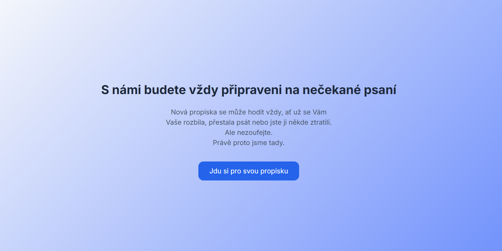
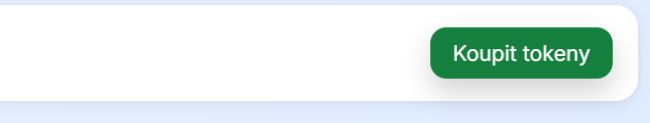
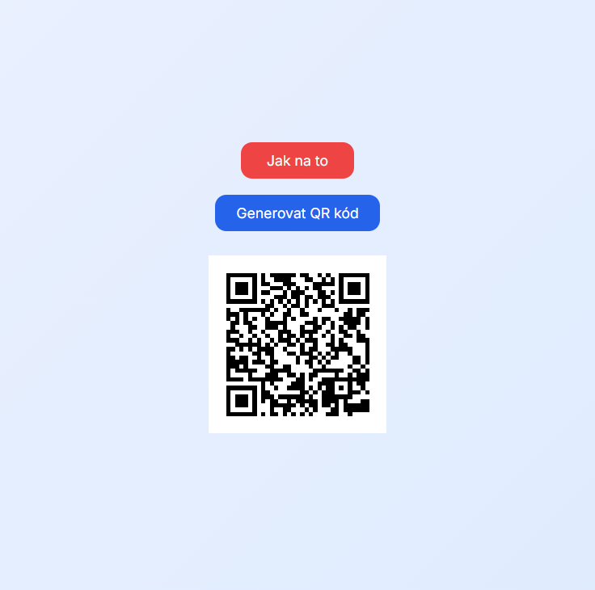

1️⃣ Přihlášení
S prvním přihlášením přes Google sing-in se vám automaticky vytvoří účet. S kažým dalším přihlášením se pak načítají vaše informce jako počet tokenů.

2️⃣ Nákup tokeny
K tomu, abyste si mohli vyzvednout propisku z automatu, potřebujete tokeny. Jedna propiska stojí jeden token. Berte na vědomí, že pokud se přihlásíte s jíným účtem než na kterém jste si zakoupili tokeny, nebudete je moci na tomto účtu použít. Počet tokenů které vlastníte je vidět vlevo nahoře.

3️⃣ Generování QR kódu
QR kód slouží k vyzvednutí propisky. Můžete si ho vygenerovat kliknutím na tlačítko "Generovat QR kód". Kód zmizí 30 vteřin po objevení a můžete si ho znovu vygenerovat opětovným kliknutím na tlačítko.

4️⃣ Použití automatu
QR kód naskenujte na čtečce umístěné na automatu. Pokud máte dostatek tokenů, automat vám vydá propisku a odečte jeden token z vašeho účtu.
Kontakt
V případě jakýchkoliv dotazů či problémů nás neváhejte kontaktovat na emailu.
Filip Janda Pavel Manásek